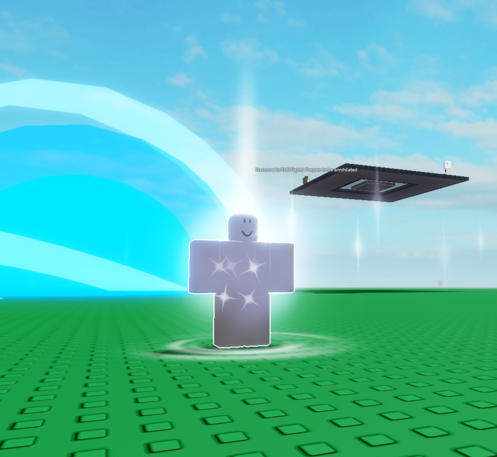

Hello and welcome to my portfolio. On this website, you can find out about my past experiences and projects, as well as getting to know me and my interests. You can use the navigation bar at the top to view a corresponding page, or you can scroll further down to learn more about me. If you have any questions, feel free to contact me via the methods shown on the contact page.
Hi. My name is Caleb Gacek and I am currently starting my first year at university. I have a variety of interest that I enjoy pursuing on a daily basis, primarly with computers and technology. I have also taken time to work on several new projects over the past few months. These projects include school projects, collaborations, and personal projects I work on during my free time. A major project that I have been working on for the past few years is a YouTube channel called Elemental that focuses on gaming content, primarily Roblox Games. It currently has over 375,000 subscribers and I am still continuing to work on it for several hours a day. If you would like to learn more about it, feel free to check out the projects page. If you would like to view it, you can click here.
My interests are not only limited to computers and technology, however. I also like to spend time outside and in nature, whether through walks, hikes, or my personal favourite: photography. Many of the pictures you will see were taken during my trips with family and friends and contain some of the happiest memories of my life.
Programming is a personal hobby of mine that I like to pursue almost every single day. I love programming and creating my own games, as well as pursuing other projects that help me build experience with code. I spend a lot of my time working on Roblox games, some of which I have been working on for almost a year now. Both games (I currently have 2 public games) helped me build on my knowledge of Lua and helped me develop problem solving skills through logical situations and procedures. I have also had a lot of fun making games and writing code with friends; it is one of my favourite aspects of programming. One game focuses on procedurely generated terrain and data, similar to Minecraft, that also acts as a survival game. The other game is a combat/fighting game that lets players fight through randomly-selected attacks, all of which are unique in their own way. These games have also garnered a decent following, gaining a few thousand plays over the past months and still continuing to grow. To learn more about these games, you can view the Projects page or visit this link to my Roblox profile.
When it comes to my personality, I am definately someone who likes to stay organized and always have some sort of schedule or plan. I like to work in a quality over quantity mindset and I will always strive to make something as close to perfect as possible. I also like to take my time on things rather than rushing through, especially when it comes to games. When it comes to working alone or with others, I prefer to work individually however I can still work effectively in a group. When I have my own project, I get to work on the things that I believe would be best for the project and I make everything myself, giving me a sense of accomplishment when I finish. I do like to work in groups, though, as it definately cuts down on the amount of work I have to do and I can also get to meet new people. When I am working in a group, I naturally take on a leadership role as I like to keep track of progress as well as keeping things progressing. This was one of the many skills I learned from a leadership class that I took during high school, teaching me fundamantals of working in a team. Furthermore, I like to set goals and timelines for myself in order to accomplish a task. I find that I work best when I have a certain goal in mind for the final result so that I know what I am working towards.
Currently, I am taking the Computer Science course at the University of Calgary. Ever since I was a kid, I have had the dream of becoming a game developer and creating computer programs for people to use. Today, I am fully pursuing this dream and I have already had tons of fun in the process. I can't wait to see what the future holds, especially with all of the new technology we are seeing, like A.I. and its massive potential. The technology industry is one of the most important and rapily-evolving industries in the world and it is also where I see myself in the future.